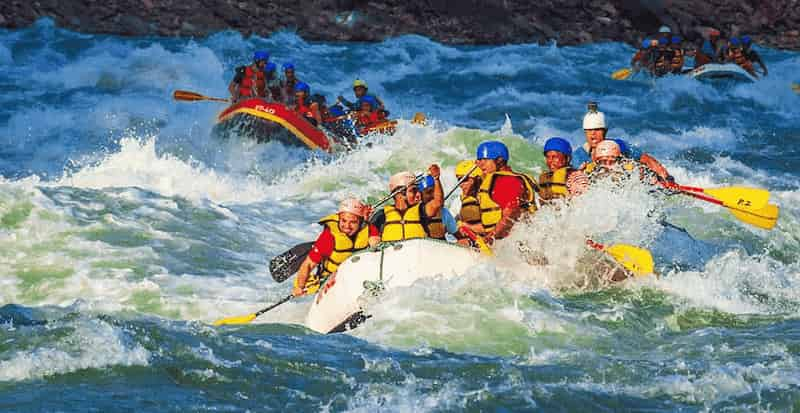
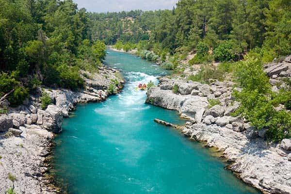
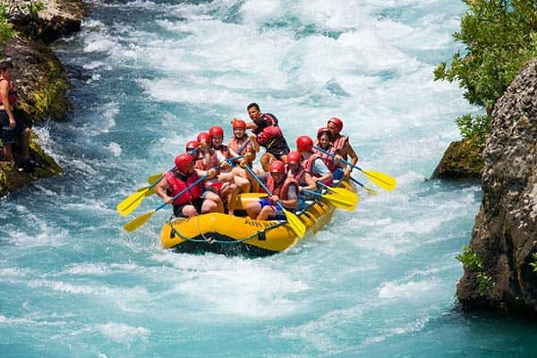
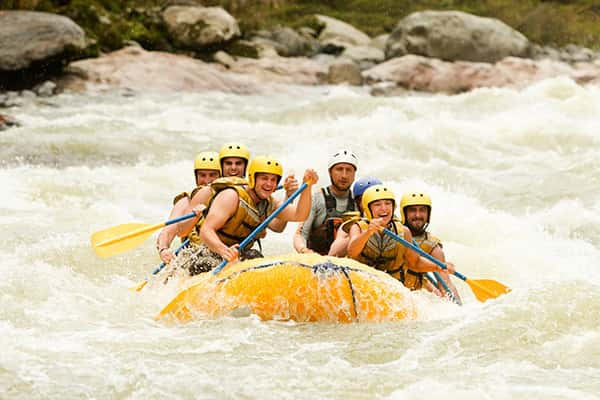

Nossos Passeios
Escolha sua Aventura
Descubra nossos passeios exclusivos e transforme sua experiência de rafting em uma memória inesquecível.
Passeios em Destaque

Salto do Rio Negro
Experimente a emoção de descer uma das corredeiras mais emocionantes do Rio Negro. São duas horas de rio com corredeiras leves e moderadas, passando por mata preservada e terminando no salto. Nível fácil, com toda segurança e equipamentos inclusos.

Corredeira do Paranapanema
Aventura para quem busca adrenalina. Nível intermediário, 3 horas de corredeiras agitadas e curvas técnicas. Recomendado para quem já tem experiência e quer mais emoção, com suporte e segurança.

Cânion do Iguaçu
Expedição completa de 4 horas pelo impressionante cânion do Iguaçu, nível avançado com corredeiras e vistas deslumbrantes. Navegamos pelo cânion com paisagens únicas, paradas para banho e contato total com a natureza. Um roteiro desafiador e inesquecível, com guia certificado e kit completo.
Compare nossos Passeios
| Passeio | Nível | Duração | Destaques |
|---|---|---|---|
| Salto do Rio Negro | Fácil | 2 horas | Corredeiras leves, mata preservada, salto final |
| Corredeira do Paranapanema | Intermediário | 3 horas | Corredeiras agitadas, curvas técnicas, adrenalina |
| Cânion do Iguaçu | Avançado | 4 horas | Cânion impressionante, corredeiras desafiadoras, paisagens únicas |
Pronto para viver essa aventura?
Entre em contato conosco e descubra mais sobre nossos passeios!
Fale Conosco